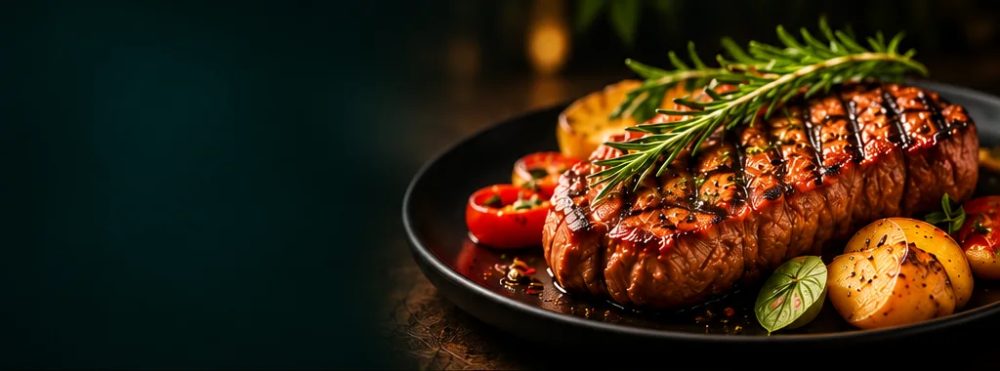
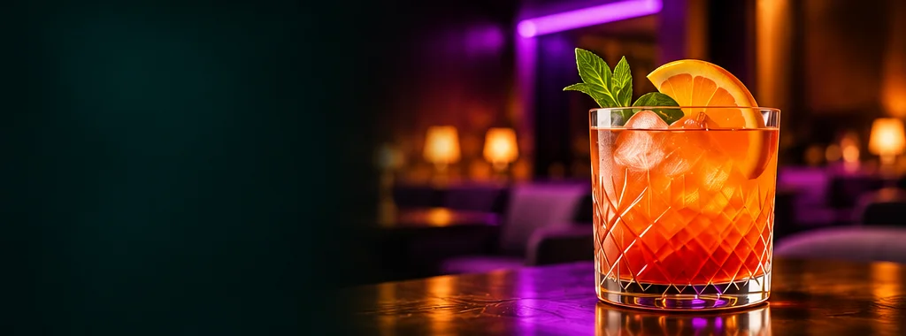
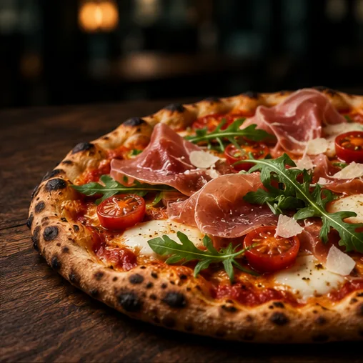
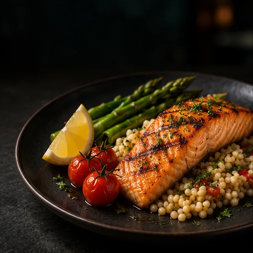
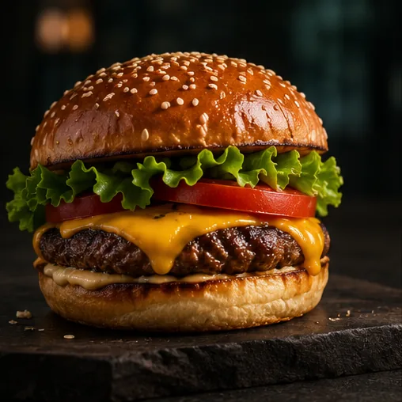

Hambar Bistro
Rafinament relaxatO cină obișnuită poate deveni o seară specială. Hambar este alegerea pentru momente în doi, preparate savuroase și o atmosferă elegantă, dar relaxată.
Vezi pe hartă → Înapoi la intrare
Înapoi la intrare
De la o cină în doi la o seară cu prietenii. Alege locul care ți se potrivește în Slobozia.

O cină obișnuită poate deveni o seară specială. Hambar este alegerea pentru momente în doi, preparate savuroase și o atmosferă elegantă, dar relaxată.
Vezi pe hartă →
Locul în care o cafea se poate transforma într-o conversație lungă. Potrivit pentru întâlniri cu prietenii, mese relaxate și ieșiri spontane.
Vezi pe hartă →
Mai mult decât o simplă masă. NOA te invită să prelungești seara într-un cadru de lounge, potrivit pentru socializare și momente petrecute cu prietenii.
Vezi pe hartă →
O masă savuroasă, fără formalități. Un loc de ales când ai poftă de preparate în stil italian și vrei să petreci timp cu familia sau prietenii.
Vezi pe hartă →
Pentru aniversări, mese importante și ocazii care merită un cadru aparte. O alegere inspirată când vrei să aduci un plus de eleganță întâlnirii.
Vezi pe hartă →
Un loc pentru mesele care aduc familia la aceeași masă. Atmosferă clasică și o experiență familiară, potrivită pentru un prânz sau o cină fără complicații.
Vezi pe hartă →
O ieșire spontană, o masă consistentă și timp petrecut cu prietenii. Potrivit pentru zilele în care vrei să te bucuri de mâncare într-un cadru relaxat.
Vezi pe hartă →
Pentru cei care vor mai multă varietate în farfurie. Un loc de luat în calcul când ieși cu un grup cu preferințe diferite sau ai chef să încerci ceva nou.
Vezi pe hartă →
O pauză plăcută din ritmul zilei. Un loc cu o poziționare relaxată, potrivit pentru o masă informală sau o întâlnire fără planuri complicate.
Vezi pe hartă →
Când ai poftă de o masă consistentă și nu cauți formalități. O alegere pentru preparate savuroase și momente în care mâncarea este în centrul atenției.
Vezi pe hartă →
Pentru un prânz liniștit sau o cină obișnuită, când vrei o alegere familiară. Un loc de luat în calcul pentru o masă practică, fără prea multe pregătiri.
Vezi pe hartă →
Un loc în care să te oprești, să iei masa și să te bucuri de o pauză. Potrivit pentru momente simple, alături de familie sau în timpul unei zile aglomerate.
Vezi pe hartă →
Pentru zilele în care vrei ceva diferit, gustos și rapid. O opțiune practică atunci când pofta de mâncare nu poate aștepta.
Vezi pe hartă →
O seară reușită începe cu oamenii potriviți. Un loc de luat în calcul pentru întâlniri cu prietenii, conversații și o atmosferă degajată.
Vezi pe hartă →Imagini ilustrative.